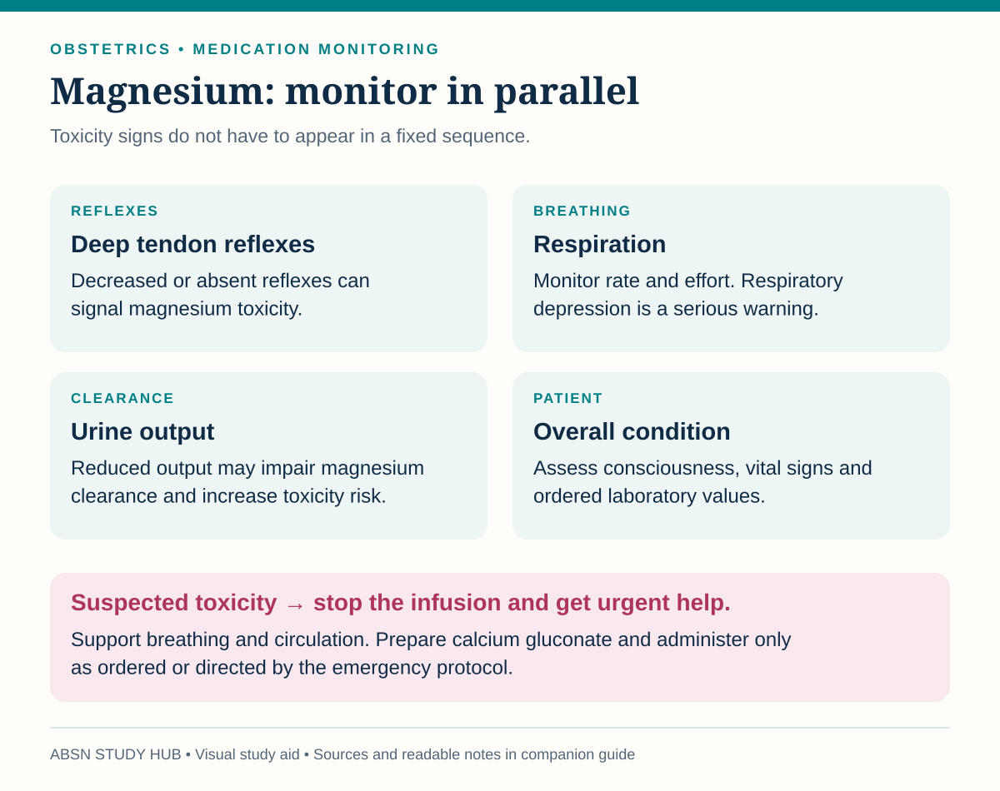
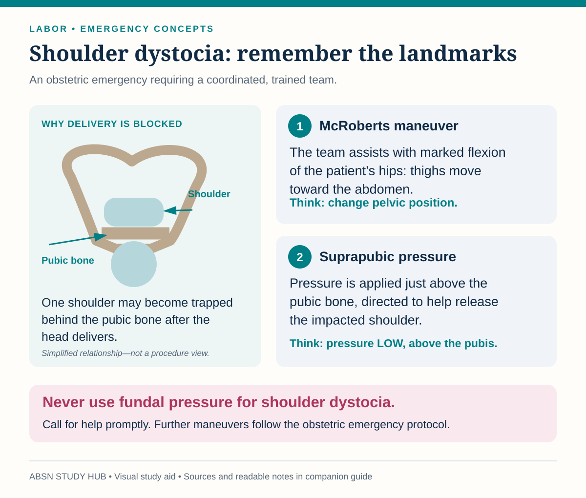

Preterm labor, shoulder dystocia, precipitous birth, cord prolapse, uterine rupture and inversion, amniotic fluid embolism, DIC and meconium — each one with the action that comes first.
In every emergency on this page the first action is a position change or stopping something — not a drug. Reposition, relieve, stop the oxytocin, call. The medication comes after.
| What she has | Think | The tell |
|---|---|---|
| Sudden tearing pain, contractions stop, presenting part rises | Uterine rupture | Fetal bradycardia is often the first sign, before the pain |
| Sudden pain, board-like rigid uterus, dark bleeding | Abruption | Pain is constant, uterus does not relax |
| Painless bright red bleeding | Placenta previa | No vaginal exam |
| After the placenta: massive bleeding, fundus not palpable | Uterine inversion | Shock out of proportion to visible blood |
| Oozing from IV sites and gums, petechiae | DIC | She bleeds from places nobody cut |
Definition: regular contractions with cervical change between 20 and 366/7 weeks. Contractions alone are not preterm labor.
| What raises the risk | What she may notice |
|---|---|
| Infection — urinary tract, vaginal, chorioamnionitis | Contractions every 10 minutes or closer |
| A previous preterm birth | Low, dull backache that comes and goes |
| Twins or more; too much fluid | Pelvic pressure — “the baby feels low” |
| Short cervix | Cramping, with or without diarrhea |
| Smoking, substance use, abdominal trauma | Change in discharge, or any bleeding |
| Given | What it is really doing |
|---|---|
| Betamethasone | Fetal lung maturity — the single most valuable thing bought by delay |
| Magnesium sulfate before 32 weeks | Fetal neuroprotection — reduces cerebral palsy |
| Nifedipine, indomethacin, terbutaline | Tocolysis — buying 48 hours for the steroids to work |
| Penicillin / ampicillin | Group B strep prophylaxis |
Tocolytics do not save the pregnancy. They buy time for the steroids and for transfer to a hospital with a NICU.
The exams key it as reflexes → respirations → cardiac: lost deep tendon reflexes, then a respiratory rate under 12, then heart changes. That is the usual order, not a guaranteed one — monitor all of them together, with urine output.

Sources checked October 3, 2026:
The turtle sign: the head delivers and then retracts back against the perineum, and restitution does not happen.

Sources checked October 3, 2026:
Afterwards, look for: in the baby, a fractured clavicle or a brachial plexus injury (the arm lies limp); in the mother, a large postpartum hemorrhage and deep lacerations.
The clock starts immediately. Cord compression means the baby is not being oxygenated.
Never apply FUNDAL pressure. It drives the shoulder harder into the pubic bone and can rupture the uterus. Suprapubic only.
McRoberts works by rotating the pelvis, flattening the sacral promontory and freeing the shoulder. It is simple, non-invasive and resolves most cases.
Don’t mix these up: McRoberts = thighs flexed up onto her abdomen · Gaskin = hands and knees · suprapubic pressure = just above the pubic bone — never fundal pressure, and not a push on the shoulder itself.
Risk factors: macrosomia, maternal diabetes, previous dystocia, post-dates, obesity. A brachial plexus injury in the baby is Erb’s palsy.
| Cord COMPRESSION | Cord PROLAPSE | |
|---|---|---|
| On the monitor | Variable decelerations | Deep variables or a prolonged deceleration |
| You can feel it? | No | Yes — or you can see it |
| First action | Reposition her — side, then other side, then knee–chest | Lift the presenting part off the cord and keep it there |
| Then | Oxygen, fluids, consider amnioinfusion | Knee–chest or Trendelenburg, oxygen, straight to cesarean |
Do not push a prolapsed cord back in, and do not take your hand out. You travel to the operating room with it in place.
Who: a previous uterine scar, especially a classical incision; oxytocin overstimulation; grand multiparity; trauma.
Pain that suddenly stops during strong labor is not relief. It is rupture until proven otherwise.
Action: stop the oxytocin, oxygen, fluids, notify, and prepare for immediate surgery.
Who: traction on the cord, fundal pressure, a fundal placenta, a long labor.
Action: call for help, stop uterotonics so the uterus can be replaced, large-bore IV and fluids, and expect the provider to replace it manually. Uterotonics go back on only after it is back in.
Both of these are made more likely by the same two mistakes: pulling on the cord, and pressing on the fundus.
Amniotic fluid and fetal cells enter the maternal circulation and trigger a catastrophic reaction.
Rare, unpredictable, and one of the leading causes of maternal death.
Care is entirely supportive and immediate: oxygen, intubation, CPR if needed, massive transfusion, blood products for DIC, and emergency delivery.
There is no way to prevent or predict this one. Recognition and speed are everything.
It is always secondary. Look for the trigger: abruption, fetal death in utero, amniotic fluid embolism, sepsis, severe preeclampsia or HELLP.
| What you see | What the labs do |
|---|---|
| Oozing from IV sites, gums, the incision | Platelets down |
| Petechiae, bruising | Fibrinogen down |
| Bleeding that will not clot | PT and aPTT up |
| Hematuria | D-dimer up |
Treatment is the trigger plus replacement — blood products, oxygen, fluids. You cannot fix the clotting while the cause is still running.
Green or brown fluid means the fetus has passed stool in utero. The worry is that it is inhaled.